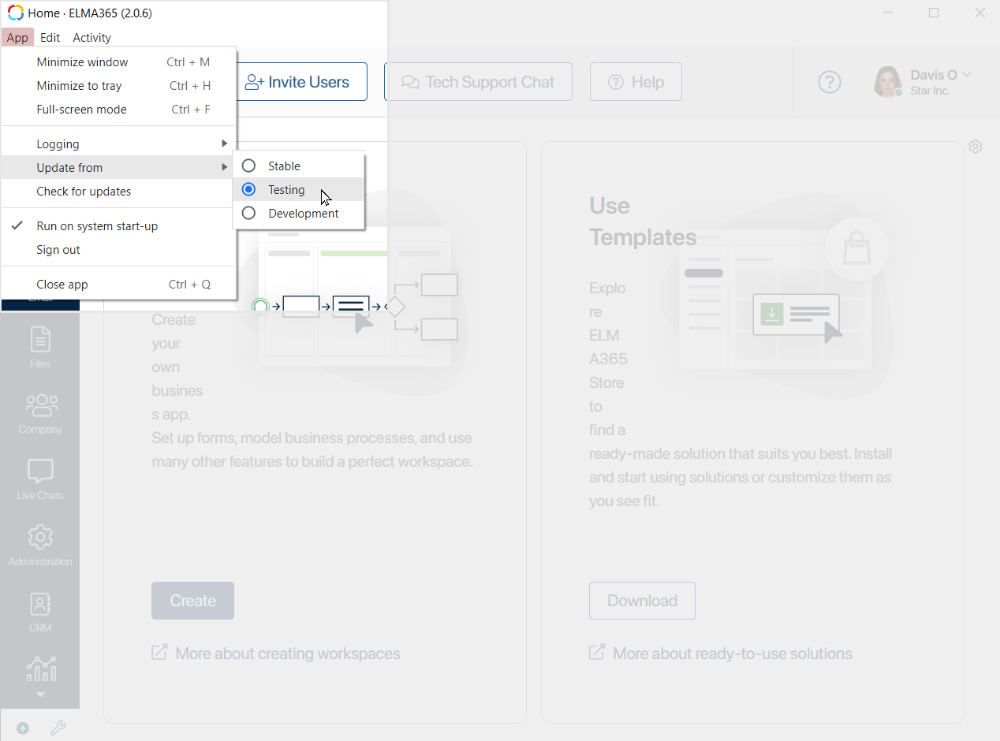
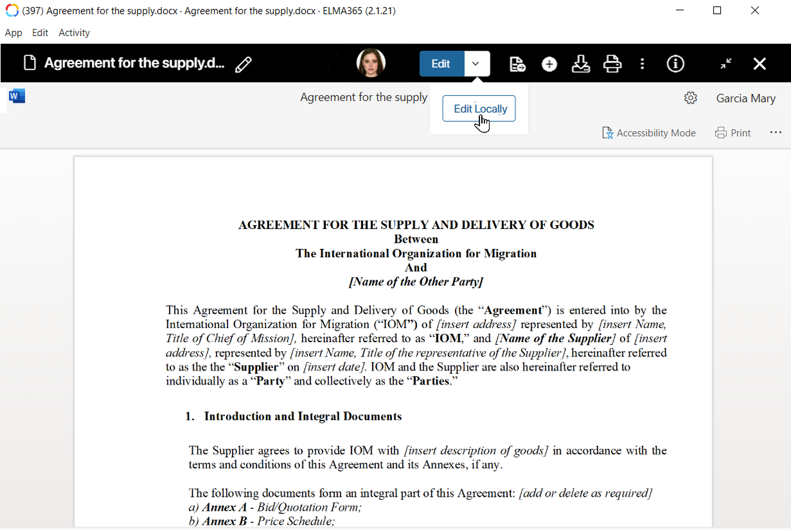
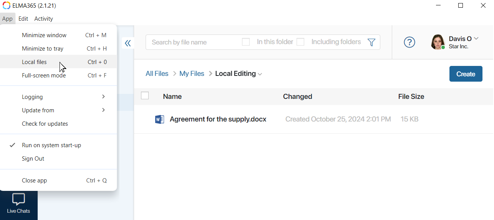
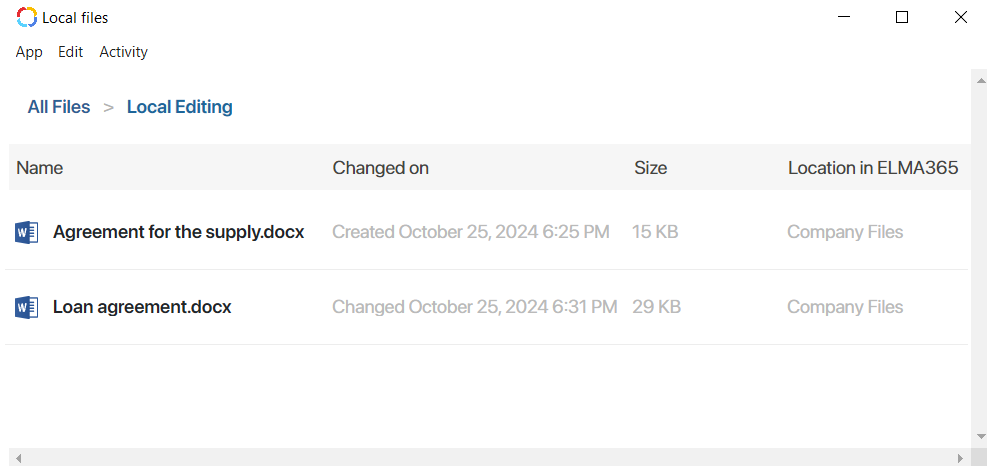
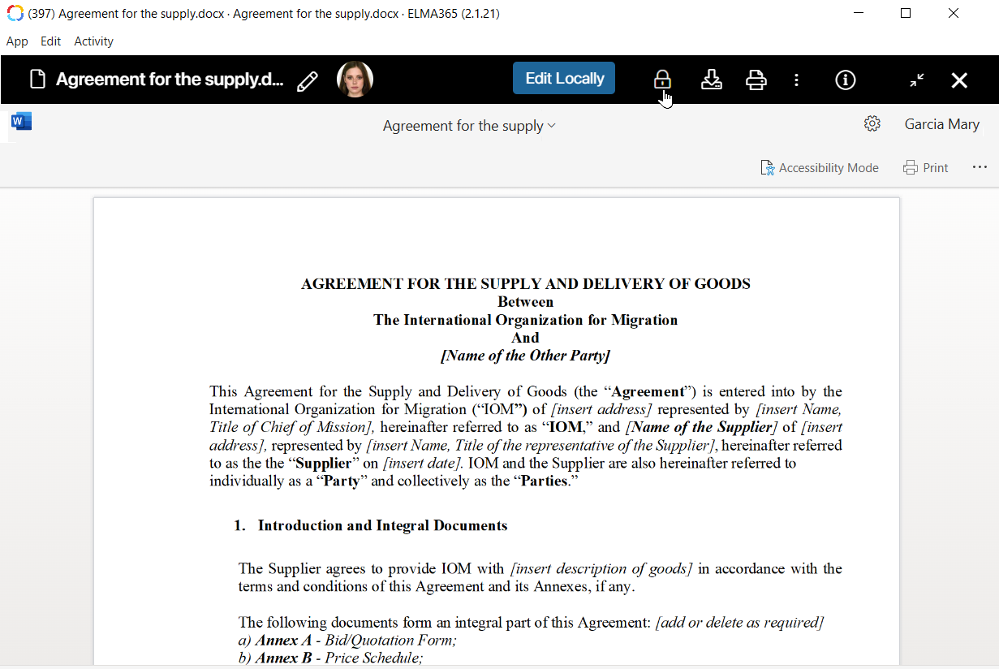

Онлайн-редактирование
Если в вашей компании настроена интеграция с сервисами OnlyOffice или Р7‑Офис вы можете изменять файлы онлайн из интерфейса ELMA365.
Для этого в режиме просмотра файла нажмите Редактировать на верхней панели. Откроется окно редактирования документа.
После внесения изменений можно:
|
Выйти из режима редактирования и продолжить просмотр файла. |
Закрыть страницу просмотра файла. |
В систему будет добавлена новая версия файла, которая станет текущей.
Локальное офлайн-редактирование
В приложении ELMA365 для ПК вы можете редактировать файлы с помощью установленных офисных программ, например, Microsoft Office или OnlyOffice, без подключения к интернету.
Локальное редактирование поддерживается для файлов форматов: .doc, .docx, .xlsx, .pptx, .odt, .odp, .ods.
Рассмотрим на примере, как можно изменять на компьютере файлы из ELMA365:
- Сотрудник в приложении ELMA365 создаёт локальную копию договора. Файл блокируется в ELMA365, а его локальная копия сохраняется в системе.
- Без подключения к интернету сотрудник может открыть копию договора в программе Word, внести правки и сохранить файл.
- В ELMA365 добавляется новая версия договора.
- После восстановления интернет-соединения сотрудник переходит в приложение ELMA365. Затем открывает договор в режиме просмотра и разблокирует его, чтобы другие пользователи могли работать с обновлённой версией файла.
Локальное офлайн-редактирование доступно:
- для документов из элементов приложений. Для этого на форме приложения размещается виджет Загрузка файла с предпросмотром. Подробнее о том, как работать с копией документа, читайте в статье «Локальное офлайн-редактирование документов»;
- для файлов из раздела Файлы. Создание и редактирование локальных копий файлов рассмотрим в этой статье.
Включить локальное редактирование
Локальное редактирование доступно в версии приложения ELMA365 2.1.21 и выше в канале обновления Тестирование.
начало внимание
Канал Тестирование содержит менее стабильные версии системы, предназначенные для проверки новых функциональных возможностей перед выпуском стабильной версии приложения.
конец внимание
Чтобы включить возможность локального редактирования, выполните следующие действия:
- Откройте приложение ELMA365 для ПК.
- На верхней панели нажмите Приложение и выберите Канал обновления > Тестирование.

- В появившемся окне загрузите версию 2.1.21 или выше.
- Установите обновление.
Создать локальную копию файла
Чтобы загрузить файл для локального редактирования, выполните следующие шаги:
- Перейдите в раздел Файлы.
- Откройте документ в режиме просмотра.
- Рядом с кнопкой Редактировать нажмите значок и выберите опцию Редактировать локально.

После этого:
- файл откроется в офисной программе на ПК, например, Word или Excel, и сохранится в приложении ELMA365 в специальном списке локальных копий;
- в папке Мои файлы > Локальное редактирование добавится ссылка-ярлык на файл для быстрого доступа к нему из системы;
- для других пользователей действия с файлом в ELMA365 заблокируются.
- Внесите изменения в программе.
- Сохраните файл — в ELMA365 автоматически добавится новая версия.
Чтобы открыть список сохранённых локальных копий, перейдите в приложение ELMA365 и на верхней панели нажмите Приложение > Локальные файлы.

Выберите файл из списка, чтобы открыть его на компьютере повторно, изменить и добавить новую версию в ELMA365.

Особенности работы с локальной копией файла:
- список локальных копий доступен пользователю даже без интернета;
- повторное открытие и редактирование возможны до тех пор, пока копия находится в списке в приложении ELMA365;
- чтобы удалить копию из списка, разблокируйте файл в ELMA365.
Разблокировать файл в ELMA365
Когда вы создаёте локальную копию файла, он блокируется в ELMA365. Это значит, что другие пользователи смогут только просматривать файл. В режиме просмотра они увидят аватар пользователя, создавшего локальную копию файла, и значок замка рядом с ним.
Разблокировать файл можете вы и администратор системы. Для этого:
- При подключении к интернету перейдите в ELMA365.
- Для быстрого доступа к файлам с локальными копиями откройте папку Файлы > Мои файлы > Локальное редактирование, где хранятся ссылки‑ярлыки на них.
- Откройте нужный файл в режиме просмотра.
- На верхней панели нажмите на значок замка.

После этого:
- локальная копия удалится из вашего списка в приложении ELMA365;
- другие пользователи снова получат доступ ко всем действиям с файлом.